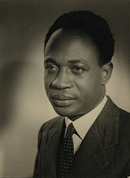

1909-1972
"Freedom is not something that one people can bestow on another as a gift. Thus claim it as their own and none can keep it from them."
Francis Kwame Nkrumah (21 September 1909 - 27 April 1972) was a Ghanaian politician, political theorist, and revolutionary. He served as Prime Minister of the Gold Coast fromof the Gold Coast from 1952 until 1957, when it gained independence from Britain. He was then the first Prime Minister and then the President of Ghana, from 1957 until 1966. An influential advocate of Pan-Africanism, Nkrumah was a founding member of the Organization of African Unity and winner of the Lenin Peace Prize from the Soviet Union in 1962.